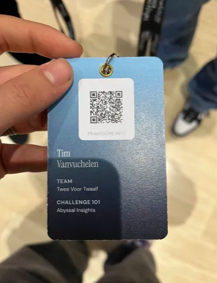
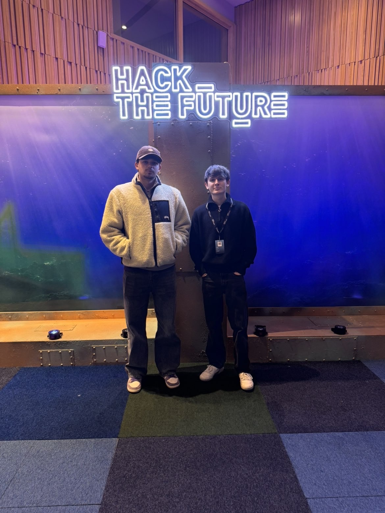
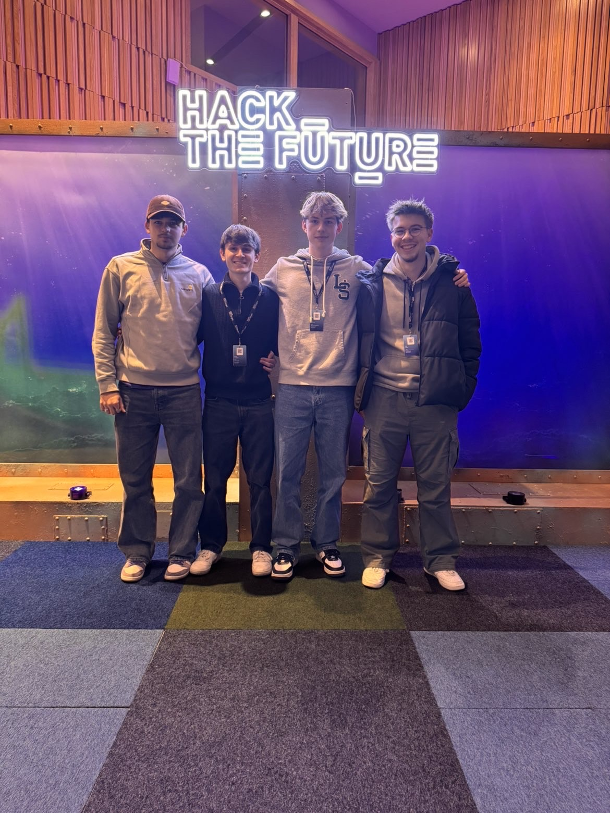

Analyse van AI, hackathons en technische groei
Activiteiten
Hackathon
Focus domein
Tijdens deze sessies maakten we kennis met Flexso en kregen we een uitgebreide introductie tot artificiële intelligentie, met focus op generatieve AI, LLM’s, prompt engineering en ethische aspecten. Vervolgens werd de link gelegd met SAP, waarbij SAP Business Technology Platform en het AI-portfolio werden toegelicht als basis voor moderne, geïntegreerde bedrijfsoplossingen. In het praktische gedeelte werkten we met het SAP Cloud Application Programming Model om zelf een applicatie te bouwen en ontdekten we hoe AI-tools zoals Joule het ontwikkelproces kunnen versnellen en automatiseren. Tot slot kregen we concrete voorbeelden van hoe AI binnen SAP wordt toegepast in realistische bedrijfscontexten, zoals automatisatie, voorspellingen en procesoptimalisatie.
📍 Corda Campus / PXL
⏱ Meerdere sessies
24u hackathon rond het thema “de zee”. Teamwork, snelle prototyping en creatieve probleemoplossing.



📍 Antwerpen
⏱ 1 dag intense build